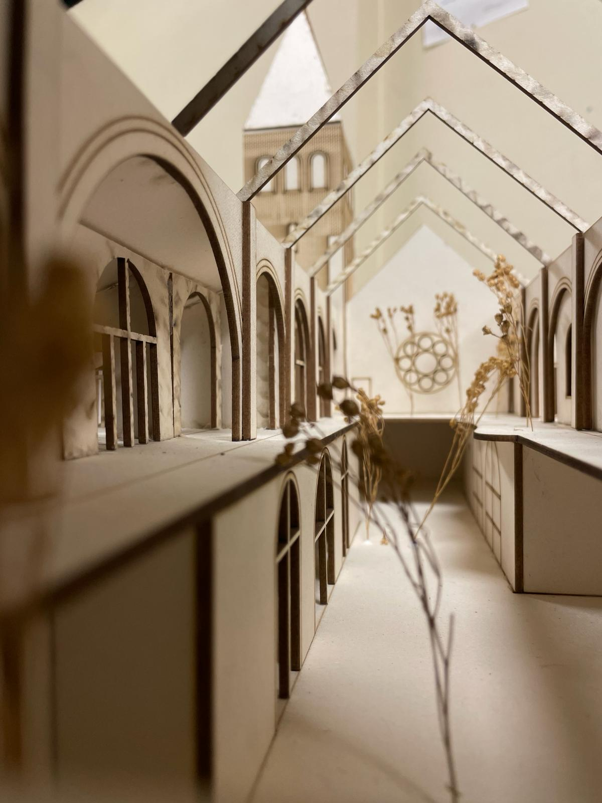
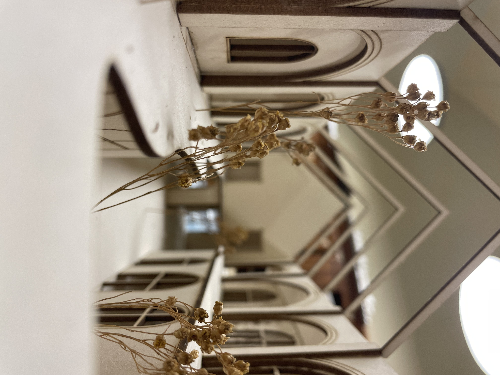
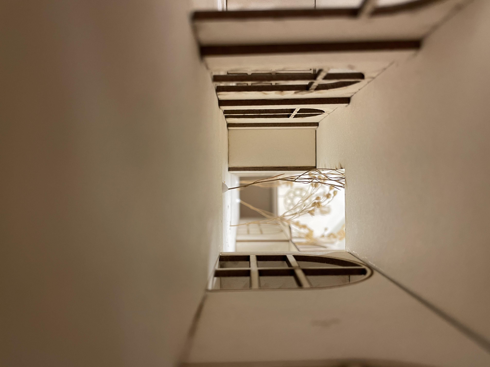
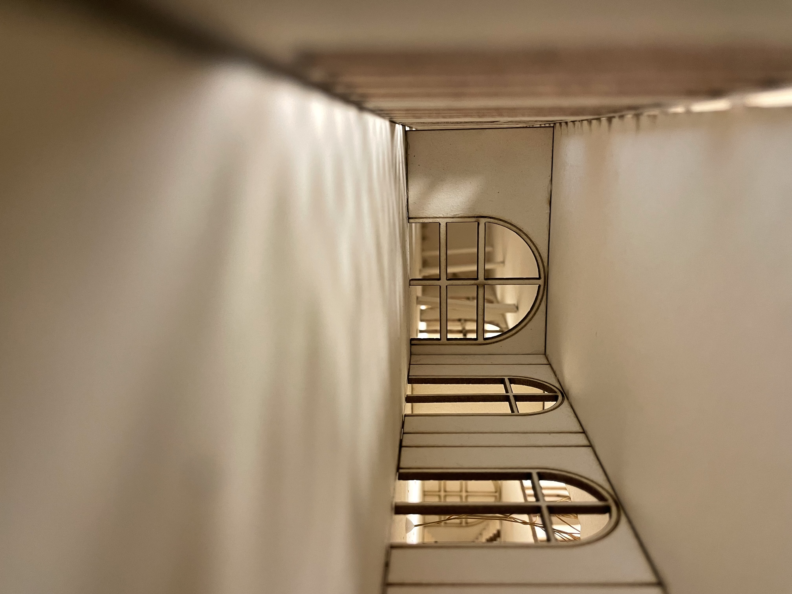
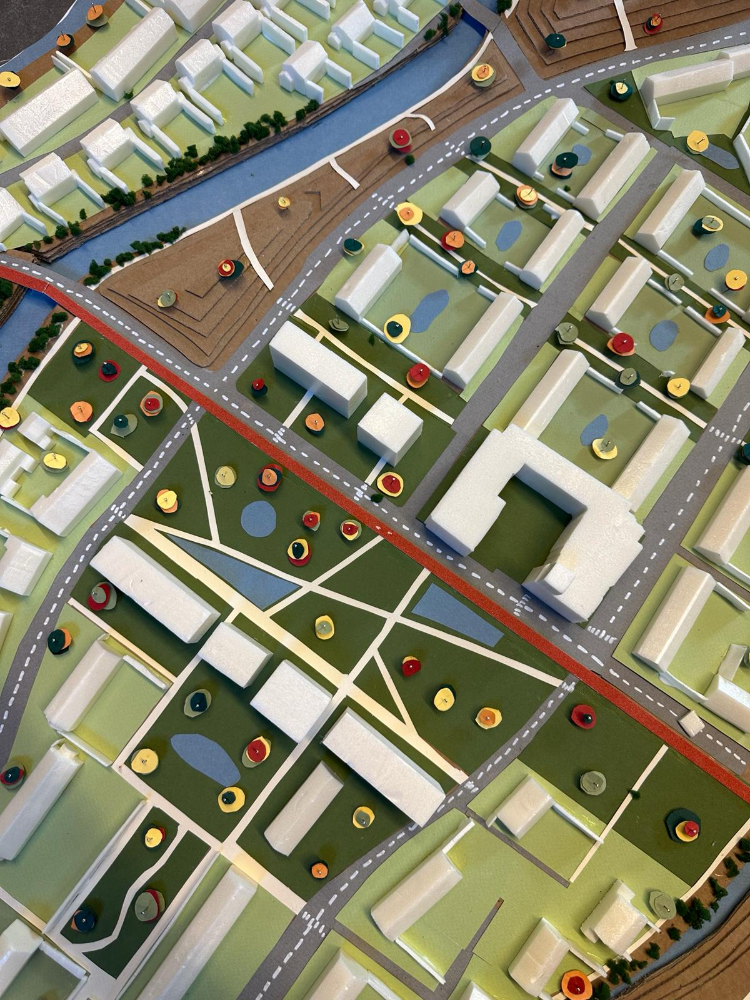
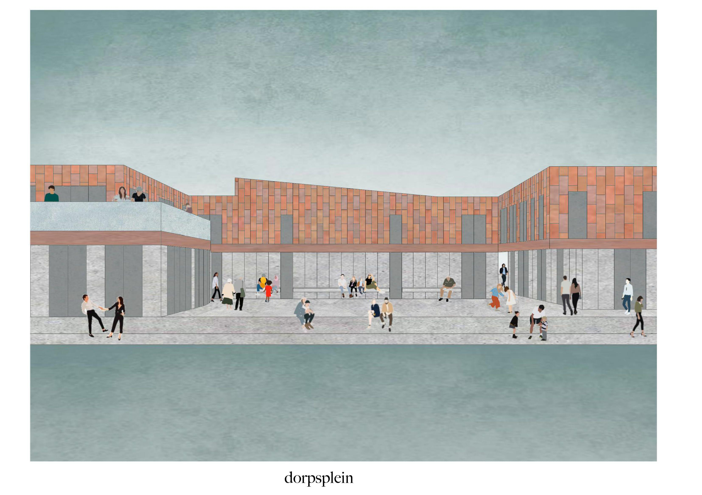

Projects
Renewing Aalst Church
In the heart of Aalst, Belgium, an old church awaited a fresh purpose. Our architectural project aimed not just to renovate the church but to add new programs that meet the community’s needs.
We focused on bringing in as much natural light as possible and incorporating greenery. A glass roof lets sunlight flood in, and shared spaces were designed to be open and welcoming.
   


Enhancing Malem, Ghent
The Malem neighborhood in Ghent, Belgium, faces significant flood risks due to its isolated island-like nature. Our design tackled this with strategic interventions to fortify Malem against climate challenges.
Key design strategies included topography modification, river slope adjustment, depavement and greening, and improved urban connectivity.
Diverse Living
Our project integrates diverse living programs into a cohesive community, combining a kangaroo house, Airbnb rental, and wheelchair-accessible housing.
Using a patio model, we designed spaces that encourage social interaction and community ownership.

Theater Island
Our vision for Theater Island integrates residential functions with a vibrant arts community. Pathways weave through the buildings to foster interaction and connectivity.
